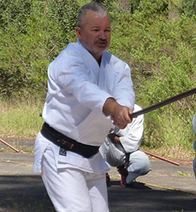

Este sitio está dedicado al aikido y a todos sus seguidores y simpatizantes.
El objetivo es promover la amistad entre sus miembros y difundir la práctica y filosofía del aikido, desde mi punto de vista y manera de entenderlo y sentirlo, junto con la difusión de la cultura japonesa.
El sitio se creo hace muchos años y hoy con el gran aporte de los alumnos Martín Pedraza y el profesor Francisco Matamala en A.S.A.K. volvimos a darle contenido.
Todos de alguna manera hablamos de plasmarlo y que el mundo tuviera acceso a la información de como se va desarrollando el aikido dentro y fuera del dojo.
"¡El árbol cuanto más alto es más viento recibe!"
El Aikido desde sus comienzos ha marcado una nueva era en las artes marciales tradicionales. Se unieron todos los conocimientos de grandes maestros y de esto se obtuvieron los mejores aportes técnicos, prácticos, teóricos y filosóficos. Creo que acá comienza una nueva visión de las artes.
Pienso que al ser un arte no competitivo, ayudo a que cada persona, sin importar edad o condición física, pueda practicarlo sin la presión de la preparación para ganarle al otro. Ayudo a que cada practicante pueda conocerse a si mismo y mejorar su calidad de vida, mejorar su entorno, como también armonizarse con la naturaleza y el cuidado de la misma.
Cuando conocí el Aikido el año 1974 fue como una iluminación, era un niño muy amante de las artes marciales. Al pasar los años fui enamorándome de este arte y ahí fue, como firmar un compromiso de por vida, de aprenderlo y difundirlo, porque creo que es la forma de aportar algo de Paz a este universo tan lastimado por falta de sentimientos y cuidados hacia todo.
Hoy mi sueño está en que cada lugar de estudio, tenga como materia curricular alguna de estas artes tradicionales como Aikido, Judo o Karate, ya que sería un gran aporte a este querido universo. De esta forma podemos participar en la formación ética y moral de niños y adolecentes que viven en áreas de muy pocos recursos, fortaleciendo valores como el respeto, confianza y cooperación. Promover una mayor capacidad de aprendizaje y transferir la mayor cantidad de herramientas para el desarrollo de habilidades sociales y psicológicas. Preparar a niños y adolecentes para un futuro de realización y contribuir a la construcción de una sociedad más colaboradora. Por último, generar nuevos practicantes de Aikido, descubriendo nuevos talentos dentro de las comunidades y capacitarlos para que actúen como futuros instructores del arte del Aikido. "Fluir como el bambú y así tu cuerpo y mente se mantendrán joven".